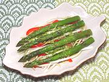

|
Asparagus Endive SaladEuro/American | ||||
| Serves: Effort: Sched: DoAhead: |
2 to 4 ** 20 min Yes |
An intriguing mix of textures and flavors with a tart basil vinegarette. Worth the high price of Belgian endives since their texture can't be duplicated by other mildly bitter greens. | |||
|
|
1 1 2 2 18 1/3 1/3 1 1/3 1/8 |
# cl c c T t t |
Asparagus Red Bell Pepper Belgian Endive Dressing Garlic Basil leaves, large Wine Vinegar, white Olive Oil, ExtV Honey Salt Peppercorns |
Make - (20 min)
|